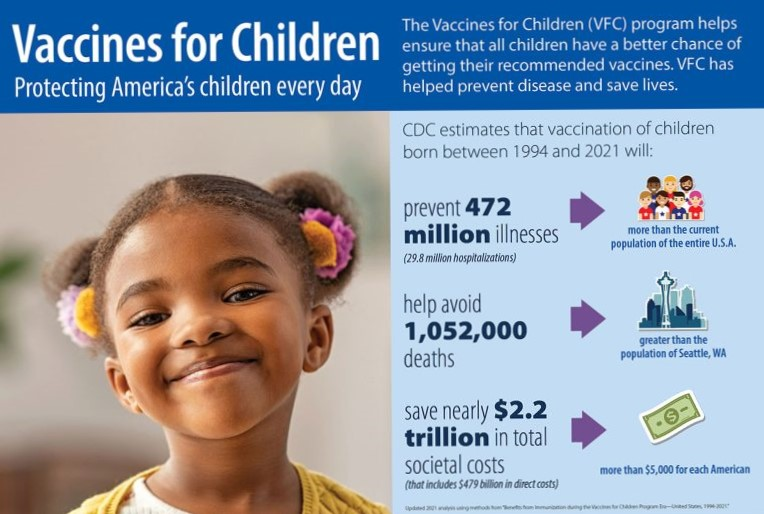

Vaccines Save Lives
Over the years, vaccines have prevented countless cases of disease and disability, and have saved millions of lives. For example, polio, which caused approximately 50,000 cases each year in the U.S., was one of the most dreaded childhood diseases of the 20th century with annual epidemics. But, through successful vaccination programs around the world, polio is almost gone from the world.

The CDC estimates that vaccination of children born between 1994 and 2021 in the U.S. will prevent 472 million illnesses, help avoid 1,052,000 deaths, and save nearly $2.2 trillion in total societal costs (that includes $479 billion in direct costs).
Unfortunately, too often, our organization learns of people who suffer from illness and disability from infectious, yet preventable diseases, or of families who mourn the devastating loss of loved ones from an illness that could have been prevented through vaccines. Read and watch their stories.
Vaccines Protect Individuals, Families and Communities
Did you know that when you get vaccinated, you’re not only protecting yourself, but you are also protecting your family and your community from contagious and dangerous diseases? If we have high vaccination rates in every community, we are able to keep diseases from spreading throughout the world